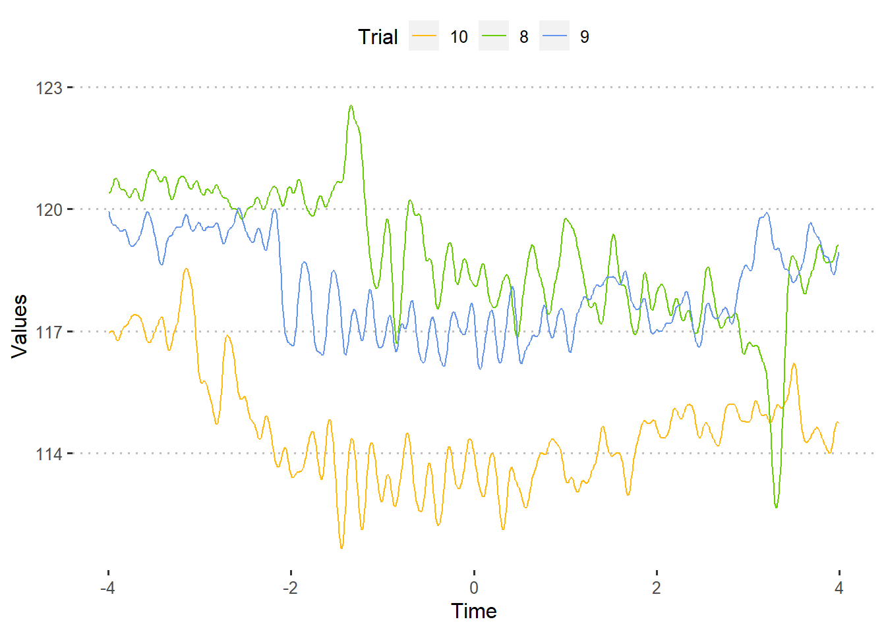
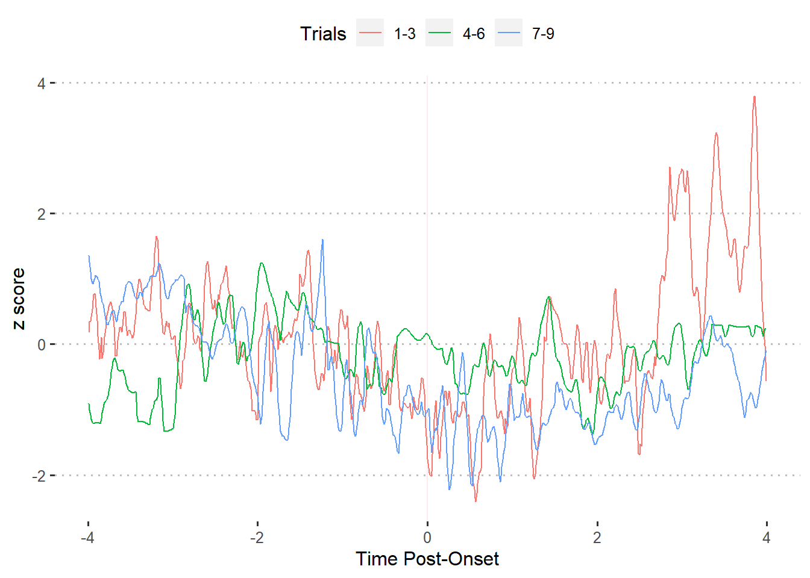
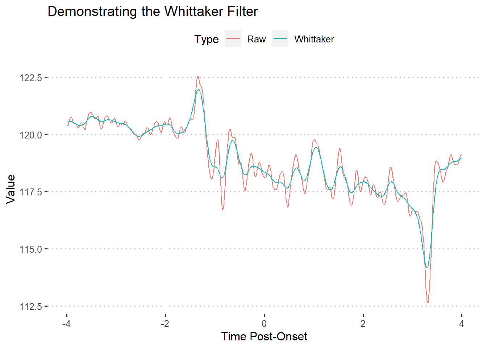
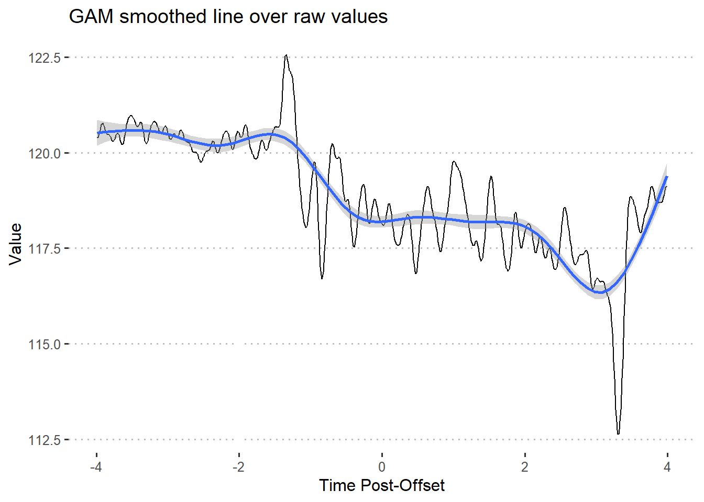
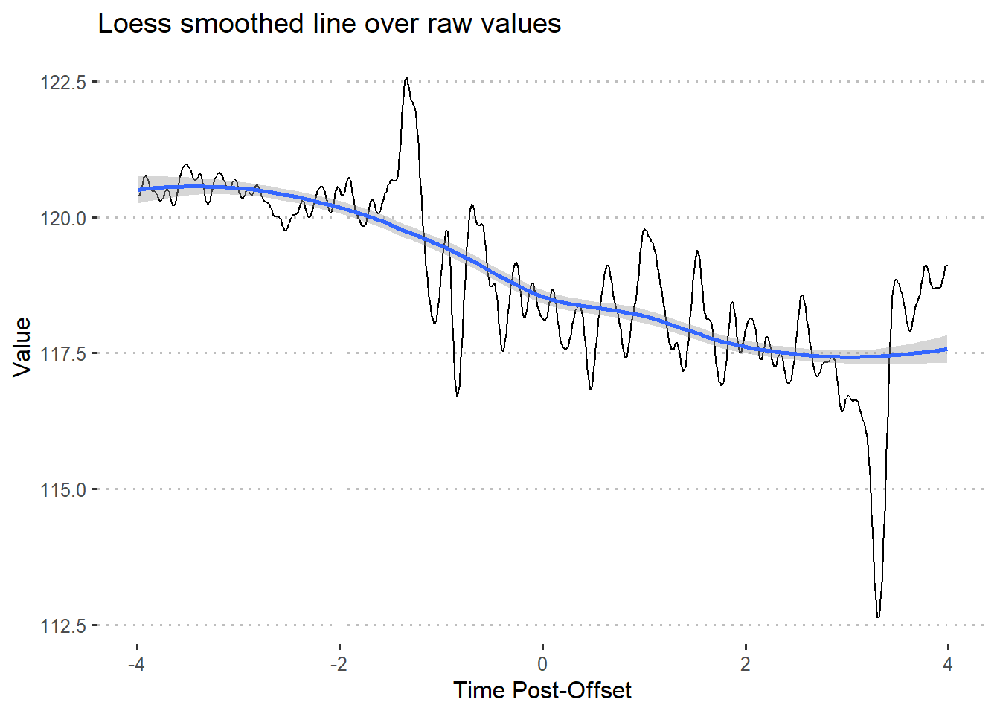
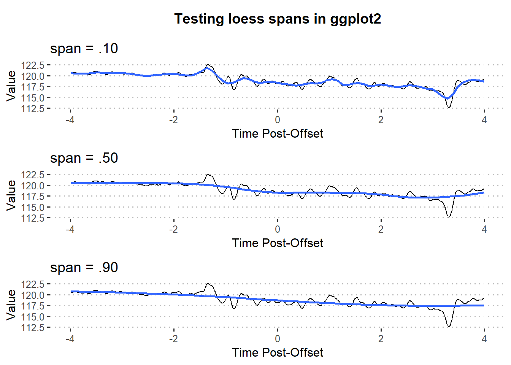

Chapter 4 Visualization
4.1 Multiple trials
The plot_trials command uses R’s base plotting functions for data exploration purposes. Some benefits of using this function are:
- Much faster graphing than alternatives (e.g. ggplot2, plotly)
- Automatic scaling of x- and y- axes for graphing multiple trials so that all data points fit in the plot boundaries
- Automatic color coding and trial number labeling
- Plotting multiple trials with a single command while using default fluoR data frame format
The more you need to graph your data in R, the more clear the tradeoff between plot_trials and ggplot becomes.
plot_trialswill save significant time from extra data manipulation when looking through your data, especially when examining a large number of trialsggplotwill be much more appropriate for publication and presentation graphing
4.1.2 ggplot2
For plotting multiple trials using ggplot2, we will need the data frame to be in “long” format. So, we stack the trials we want to plot.
df.long <- data.frame(
Time = rep(df$Time, times = 3), # repeat time values by number of trials
Values = c(df$Trial8, df$Trial9, df$Trial10), # vector of trial values
Trial = c(rep("8", length(df$Trial8)), # label trial numbers
rep("9", length(df$Trial9)),
rep("10", length(df$Trial10)))
)Now we can make the graph using ggplot2.
library(ggplot2)
library(ggpubr) # for theme
ggplot(df.long) +
geom_line(aes(x = Time, y = Values,
color = Trial)) +
scale_color_manual(values = c("8" = 'chartreuse3',
"9" = 'cornflowerblue',
"10" = 'darkgoldenrod1')) +
theme_pubclean()
4.2 Trial ranges
Let’s say that you have 30 trials. As part of your hypothesis, you believe that neural activity will change shortly after exposure to a stimulus during trials 1-10, but not subsequent ones.
One method of examining this could be:
- Standardize your data so it accounts for within-subject and between-trial differences
- Break your data into “blocks” of 10 and collapse the data across trials for each time point using a summary statistic such as the mean or median
- Plot the values using 3 groups: trials 1-10, trials 11-20, and trials 21-30
Unfortunately, a 30+ trial dataset would not be ideal to include in the fluoR package. So, we will use trial “blocks” of 3, which results in the groups being trials 1-3, 4-6, and 7-9.
For the first part, we standardize the data into z-scores from baseline.
### 1. Standardize data
df.stand <- baseline_transform(dataframe = df,
trials = 1:10,
baseline.times = c(-4,0),
type = 'z_standard')For the second part, we find the median value for each time point from each of the 3 trial blocks.
### 2. Summarize/collapse across blocks of trials
df.block1 <- summarize_trials(dataframe = df.stand, trials = 1:3,
summary.type = 'median')
df.block2 <- summarize_trials(dataframe = df.stand, trials = 4:6,
summary.type = 'median')
df.block3 <- summarize_trials(dataframe = df.stand, trials = 7:9,
summary.type = 'median')Graphing summarize data tends to be more for publication than exploration purposes, so we want to use ggplot2. Fortunately, creating multiple data frames summarize_trials allows us to simply assign a label column to each data frame and combine them before graphing.
df.block1$trial.range <- '1-3'
df.block2$trial.range <- '4-6'
df.block3$trial.range <- '7-9'
df.blocked <- rbind(df.block1, df.block2, df.block3)Last, we plot the summarized values.
ggplot(df.blocked) +
geom_vline(xintercept = 0,
color = 'red', alpha = 0.075) + # event onset at 0
geom_line(aes(x = Time, y = summ.trials,
color = trial.range)) + # trial lines
labs(
x = 'Time Post-Onset',
y = 'z score',
color = 'Trials'
) +
theme_pubclean()
4.3 Smoothing
As you can see by the previous graphs, the recorded data looks sharp when graphed across time points. While this should be used for the data extraction and analysis phase, we do not have this limitation when graphing.
The idea is to keep your data as similar as possible to the original time series while making an appealing visualization. Time series filters can help with this.
4.3.1 Whittaker filter
The Whittaker filter is a smoother that fits a curve to the data and penalizes highly-deviating points using the penalized least squares (PLS) method. There are two important parameters for this formula:
- lambda - smoothing parameter that controls the amount of curvature allowed for the least-squares fit. A smaller lambda permits more curvature
- d - order of differences for the least-squares penalty
The pracma R package includes an implementation of the Whittaker smoother (Borchers 2019).

As shown by the above figure, the Whittaker filter produces a much more “tame” line. In turn, the line makes extreme values (peaks and valleys) smaller. This filter tends to be useful when trying to smooth data without flattening too many curves.
4.3.2 Generalized additive modeling
I have only found generalized additive modeling useful as a smoother or for predictive modeling. This is because GAM’s tend to overfit the model to the data, which is a big no-no in hypothesis testing.
The mgcv R package includes a popular implementation of GAM’s. The formula input for the package’s gam function is styled like R’s base glm function. To smooth our time series data, we use Time as the dependent variable and our observation values as the independent variable.
### Compute gam
library(mgcv)
### Construct model
gam1 <- gam(Time ~ s(Trial8, bs = 'cs'), data = df) # construct model
gamfit <- predict(gam1, data = df) # use model to create fitted lineThere are also a handful of other parameters found in the documentation that can be changed, but I typically avoid. If you don’t need to change the additional parameters, ggplot2 has a command that smooths the data automatically and scales it to your original data points.
ggplot(df, aes(x = Time, y = Trial8)) +
geom_line() +
stat_smooth(method = 'gam') +
labs(
x = 'Time Post-Offset',
y = 'Value',
title = 'GAM smoothed line over raw values'
) +
theme_pubclean()## `geom_smooth()` using formula 'y ~ s(x, bs = "cs")'
In this situation, the GAM captures the general direction of the data points but almost completely removes smaller peaks/valleys and flattens extreme values.
4.3.3 Loess
4.3.3.1 model
Locally estimated scatterplot smoothing (loess) is a non-parametric regression that uses multiple regression in k-nearest-neighbor meta-models.
Loess models require much more data than standard regression. Luckily, this makes loess a solid choice for smoothing fiber photometry data. Much less so for testing hypotheses.
The stats package includes the loess function that allows us to implement it in typical R regression form. However, researchers will seldom find use for loess as a model itself.
ggplot(df, aes(x = Time, y = Trial8)) +
geom_line() +
stat_smooth(method = 'loess') +
labs(
x = 'Time Post-Offset',
y = 'Value',
title = 'Loess smoothed line over raw values'
) +
theme_pubclean()
Additionally, you can change the span parameter to control the degree of smoothing.

4.4 Further reading
Programming
- UCLA’s statistics consulting released a guide to working with time series smoothing using the
ggplot2package (Group 2016)
Math
- (Wood, Pya, and Safken 2016) offer examples of time series smoothing using the
mgcvpackage. The authors also go very in-depth with the math behind the methods.
References
Borchers, Hans W. 2019. “Pracma: Practical Numerical Math Functions.” https://CRAN.R-project.org/package=pracma.
Group, UCLA Statistical Consulting. 2016. “How Can I Explore Different Smooths in Ggplot2? R FAQ.” 2016. https://stats.idre.ucla.edu/r/faq/how-can-i-explore-different-smooths-in-ggplot2/.
Wood, Simon N., Natalya Pya, and Benjamin Safken. 2016. “Smoothing Parameter and Model Selection for General Smooth Models.” Journal of the American Statistical Association 111 (516): 1548–63. https://doi.org/10.1080/01621459.2016.1180986.